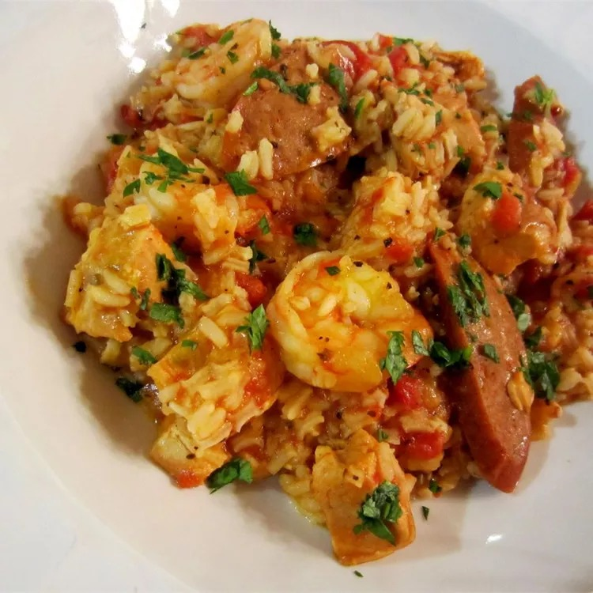

Jen's Jambalaya Recipe

Description
Jen's New Orleans jamabala which has a nice kick but not overly hot. Original recipe link
Ingredients
- 2 tablespoons butter
- 1/4 cup chopped onion
- 1/3 cup chopped celery
- 1/4 cup chopped green pepper
- 1 can diced tomatoes
- 1 1/2 cups chicken broth
- 2/3 cup long grain white rice
- 1 teaspoon dried basil
- 1/4 garlic powder
- 1/4 teaspoon black pepper
- 1/4 teaspoon hot sauce
- 1 bay leaf
- 2/3 cup diced cooked chicken breast
- 2/3 cup cooked crumbled Italian sausage
- 2/3 cup peeled cooked shrimp
Steps
- Melt butter in large saucepain over medium heat.
- Stir in onion, celery and green pepper; cook until softened.
- Add diced tomatoes, chicken broth and rice. Season with basil, harlic, pepper, hot sauce and bay leaf.
- Bring to a boil over medium to high heat.
- Turn to medium to low heat, cover and simmer for 20 minutes.
- Stir in chicken, sausage and shrimp and simmer for 2 minutes.
- Remove bay leaf before serving.